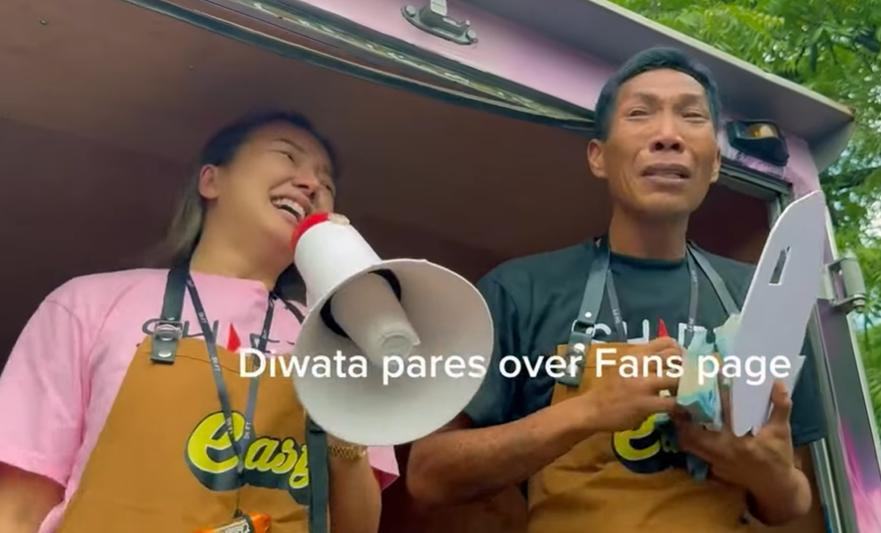
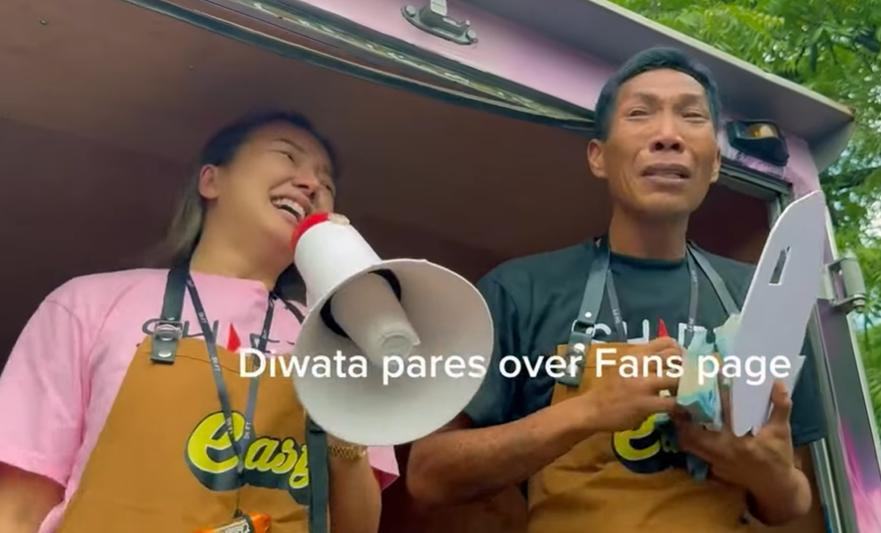

Rosmar Tan gifts Diwata PHP5M-worth of cash, house and lot
Rosmar Tan:
“Aminado ako na ginaya ko si Diwata."
by Bernie V. Franco
PUBLISHED 5 DAYS AGO

Businesswoman Rosmar Tan (left) surprises Diwata with gifts such as PHP1 million cash, house and lot, and many more. Rosmar mentioned that her gifts to Diwata is PHP5 million in total.
Inulan ng biyaya si Diwata, aka Deo Balbuena, matapos siyang regaluhan ng tinatayang PHP5 million worth of cash and gifts ng content creator at businesswoman na si Rosmar Tan.
Pinag-usapan sa social media ang pagsadya ni Rosmar sa lugar ni Diwata sa Pasay City noong Lunes, Mayo 6, 2024.
Napaiyak si Diwata dahil sa mga ibinigay sa kanya ni Rosmar: PHP1 milion cash, house and lot, PHP1M worth of products, pati na rin PHP300,000 worth na puppy with lifetime supply of dog food.
Si Diwata ay member ng LGBTQIA community na nag-trending noon dahil sa pagkakasangkot sa isang away na nauwi sa presinto. Sa TV interview, nagmarka si Diwata dahil sa kanyang unique personality.

ROSMAR BASHED FOR IMITATING DIWATA’S PARES BUSINESS
Naging talk of the town si Diwata dahil sa kanyang pares business na tinangkilik ng masa, pati na rin ng vloggers, content creators, at TV programs.
ROSMAR EXPLAINS
Sa pamamagitan ng isang video reaction na ipinost sa kanyang social media, nagpaliwanag si Rosmar kaugnay ng paratang.
Ibinahagi niya ritong “inspired” talaga ang pares business niya kay Diwata. Nagkakausap din sila via direct messaging.
Pagtatanggol ni Rosmar, dati pa niyang gustong magtayo ng pares business pero nagkaroon ng agam-agam.
Natutuwa rin daw siya dahil hinihimok pa siya ni Diwata na simulan na rin ang kanyang negosyo.
“Ang nakakatuwa kay Diwata kasi sabi niya talaga sa akin, 'Sige, Mhie, go…' parang ine-encourage niya talaga ako kahit na same line of business."
Nais tumbukin ni Rosmar na walang kumpitensiya sa kanila ni Diwata, pero hindi ito ang nakikita ng mga tao.
Katuwiran pa ni Rosmar, wala naman talagang kumpetisyon dahil sa Pasay ang pares business ni Diwata habang nasa Laguna ang paresan ni Rosmar.
Inulit ito ni Rosmar nang magkita sila at bigyan niya ng mga regalo si Diwata.
Gamit ang megaphone, pahayag ni Rosmar sa mga dumating, “Aminado ako na ginaya ko si Diwata kasi na-inspire ako talaga sa kanya .
“Sa totoo lang, matagal na kaming magka-chat ni Diwata.”
Napag-usapan din daw nila ang mga hamon ng pagtatayo ng isang pares business.
Ang sabi raw kasi ni Diwata sa kanya ay hindi ganoon kalaki ang kinikita nito sa kanyang negosyo kahit na malakas ito sa masa.
Ito naman daw ang nag-udyok kay Rosmar para bigyan ng malaking halaga, pati na rin bahay at lupa, si Diwata.
Bukal daw sa loob ni Rosmar na tulungan si Diwata at hindi pang-content lang.
Muling pinag-usapan sina Rosmar at Diwata. Naging laman uli sila ng social media, na walang dudang isang powerful media tool.
Napakarami ngayong content creators ang tumutulong sa kapwa na ginagawa nilang content at kadalasan ay tumatabo nga naman ng napakaraming views.
Hindi rin nakapagtataka kung bakit napakarami ang nagbe-venture sa content creation. Inspirado sila sa maraming content creators ngayon na nakilala na at umaasenso.
Businesswoman Rosmar Tan (left) surprises Diwata with gifts such as PHP1 million cash, house and lot, and many more. Rosmar mentioned that her gifts to Diwata is PHP5 million in total.
Inulan ng biyaya si Diwata, aka Deo Balbuena, matapos siyang regaluhan ng tinatayang PHP5 million worth of cash and gifts ng content creator at businesswoman na si Rosmar Tan. Pinag-usapan sa social media ang pagsadya ni Rosmar sa lugar ni Diwata sa Pasay City noong Lunes, Mayo 6, 2024. Napaiyak si Diwata dahil sa mga ibinigay sa kanya ni Rosmar: PHP1 milion cash, house and lot, PHP1M worth of products, pati na rin PHP300,000 worth na puppy with lifetime supply of dog food. Si Diwata ay member ng LGBTQIA community na nag-trending noon dahil sa pagkakasangkot sa isang away na nauwi sa presinto. Sa TV interview, nagmarka si Diwata dahil sa kanyang unique personality.
